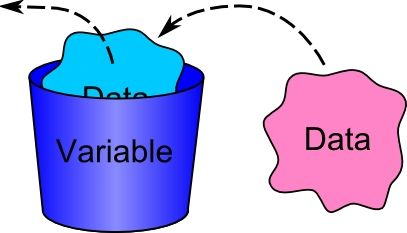

Variables en Java
En Java, una variable es un contenedor que almacena valores durante la ejecución de un programa. Cada variable tiene un tipo de datos específico que determina qué tipo de valor puede almacenar.
Tipos de Datos en Java
- int: Enteros
- float: Números de punto flotante de precisión simple
- double: Números de punto flotante de doble precisión
- char: Carácter único
- boolean: Valor verdadero o falso
- String: Cadena de caracteres
Declaración e Inicialización de Variables
En Java, se declara una variable especificando su tipo de datos seguido del nombre de la variable. La inicialización se realiza asignando un valor a la variable.
int edad = 25;
float temperatura = 36.6f;
double salario = 75500.75;
char inicial = 'J';
boolean esEstudiante = true;
